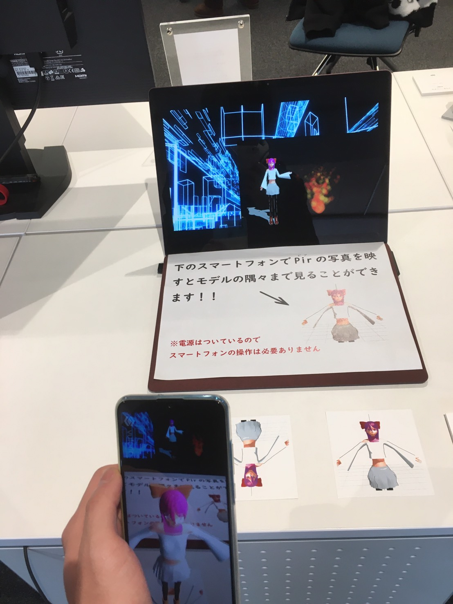
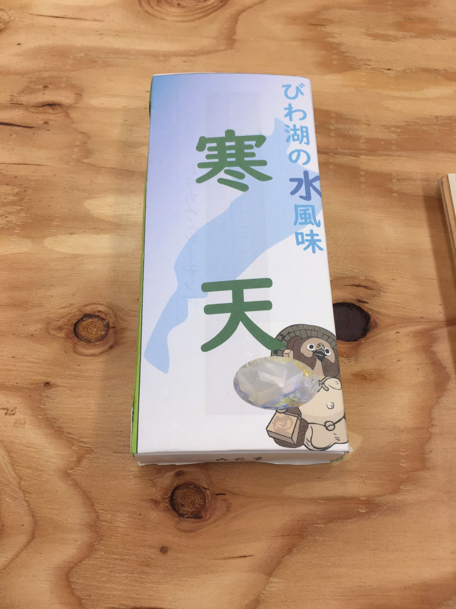
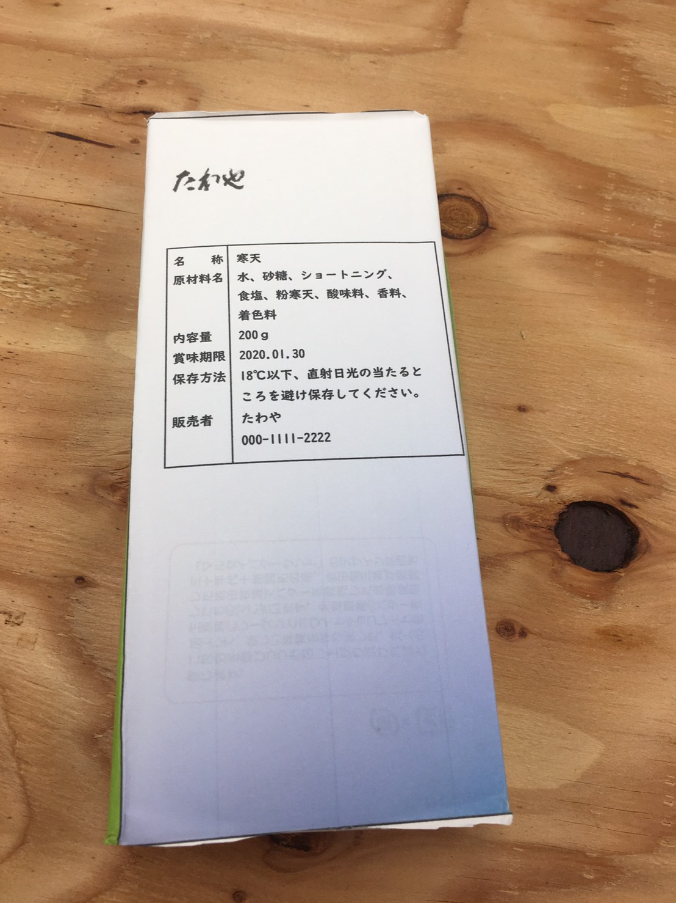
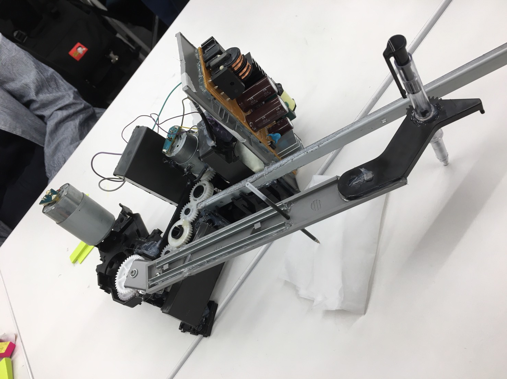
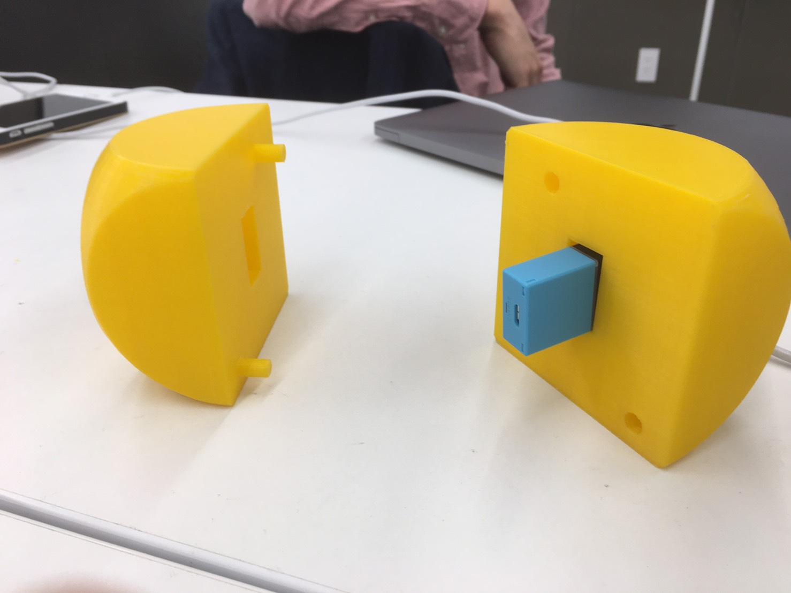

展覧会。とにかく頑張ったとしか言えない。半年間よくあきらめずここまでもってきたなぁ。自分を称賛。すごい。人生で一番努力した。ブレンダー恐怖症なったかもしれない(笑)次作るなら妥協のVロイドかな。
人に見てもらうことを考えた作りにしたほうが授業としての評価が高かったと思う。

スピログラフ。楽しんでできたしレーザーカッター使えるようになったのは大収穫
お土産琵琶湖の南の方のにおいがする設定。ジンギスカンキャラメルの類。意外と受け良い


ドローイングオートマトン。掃除とパーツ分け。メンバーのやる気を引き起こせたから良き。ちゃんと動いた。班のまとまりもあってちゃんとできた

メッシュ。メッシュを使ったおみくじの作成。３Dデータは作った
